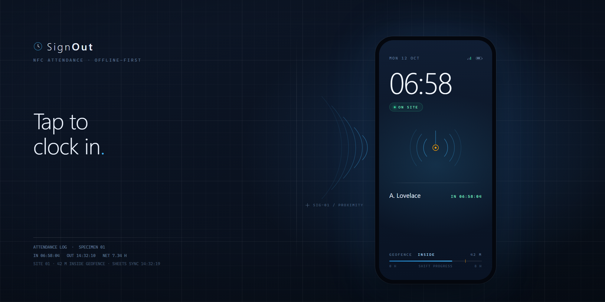

I Built a Workforce Attendance System With No Backend
No server. No subscription. No backend.
Most software doesn't need a server. Attendance software needs one least of all.
Every time-tracking product charges per seat per month, and underneath, they all do three things: store a list of people, store a list of timestamps, and subtract one from the other. You are paying rent on a database and a dashboard.
SignOut started from a blunt question: what if the app is the database? A worker's phone already has NFC, GPS, a camera, and a storage layer. The only thing missing was software. So I wrote it as a static web app — installable as a PWA, shippable as an Android APK — where the data lives on the device that collected it and syncs to Google Sheets when you want a server-side copy.
It runs live at glainejustin.github.io/signout, and the whole thing is MIT-licensed on GitHub.
What it actually does
A worker taps an NFC sticker — a 15-cent NTAG213 tag stuck on a badge or a door — and the app records IN or OUT with a timestamp. No stickers? They log in with a 4-digit PIN or scan a printed QR badge. From there it handles breaks, GPS geofencing, per-site rota, leave requests, shift swaps, overtime rules, audit logging, and exports.
Admin gets a PIN-gated dashboard: logs, a rota grid, weekly hours with overtime / late / absent flags, analytics, leave approvals, multi-site geofences, an immutable audit trail, and worker management.
The part worth studying isn't the feature list. It's how little machinery it takes to produce it.
How it works: five moving parts
1. Plain script modules, no build step. The app is index.html plus twenty-odd files in
js/, each one an IIFE exposing a single global — DB, GPS, NFC, Sanitize, UI. No
framework, no bundler, no transpiler. Open the folder and it runs. The build script exists only
to stage those same files into dist/ for the Android wrapper; it never transforms them.
2. localStorage as the database. js/db.js is a hand-written data layer over key–value
storage: workers, logs, settings, rotas, shifts, swaps, audit events, locations, leave
requests. It handles schemas, queries, and — this matters — migrations. Legacy key prefixes are
copied forward on first load, and plaintext PINs are transparently upgraded to SHA-256 hashes
the first time they're seen.
3. A service worker for offline-first. service-worker.js pre-caches every asset under a
versioned cache name and serves cache-first. The app works with zero connectivity — a worker in
a basement warehouse still clocks in — and it only bumps one string on release. Syncing to
Sheets happens later, when the network returns.
4. Haversine geofencing. js/gps.js is about a hundred lines: get the position, compute
great-circle distance with the Haversine formula, compare against a configurable radius of 20
to 500 metres. Outside the radius, clock-in is refused with the exact distance. That's it — no
mapping SDK, no location service.
5. SHA-256 PINs via Web Crypto. js/security.js hashes every PIN with
crypto.subtle.digest, gates admin login behind a 15-minute lockout after five failures, locks
a worker's account to one device after first login, and validates every outbound URL against an
allow-list — script.google.com, hooks.slack.com, discord.com, api.telegram.org — so a
compromised field can't exfiltrate data to an arbitrary host.
Why it's effective
The cost structure is different, not just lower. There is no server to provision, no per-seat fee, and no uptime to page someone about. Total hardware cost is a phone workers already carry plus a few dollars of NFC stickers. For a 5-to-200-person restaurant, warehouse, retail floor, or clinic, that's the difference between a line item and free.
Offline-first is a correctness property, not a feature. Because the database is the device, connectivity stops being an availability dependency. The app can't go down because the network did.
Data ownership is explicit. Export is one click: JSON backup, CSV by range, PDF. Syncing to Sheets is opt-in and points at your own Apps Script deployment. Nobody is holding your attendance records hostage behind a subscription.
The security model fits the threat. This isn't a bank. The adversary is a worker clocking in
from the car park. Device fingerprinting, geofencing, shift-window guards, leave guards, hashed
PINs, and brute-force lockouts are proportionate to that threat — and honest about it in a
written SECURITY.md.
The engineering discipline that surprises people
The interesting part of SignOut isn't that it's small. It's that a zero-dependency static app still gets the boring infrastructure a "serious" project gets.
The test suite runs on Node's built-in runner with no test framework and no jsdom. Instead,
tests/harness.mjs loads the real shipped js/*.js files into a vm sandbox with a tiny stub
of localStorage, document, and Web Crypto. The tests exercise the code that ships, not a
copy — the hours maths, the overtime guard, the sanitizers, the Haversine distance, the PIN
migration.
CI then runs a release gate that replays the whole shipping pipeline locally: dependencies,
required files, unit tests, web staging with a leakage check, debug APK build, and branding
verification. Without a JDK and an Android SDK it ends PARTIAL and names what it skipped — it
refuses to report a pass it didn't earn.
Two of those checks are worth stealing:
APK branding verification decodes the built APK as a zip, decodes the launcher and splash PNGs, and compares them pixel-by-pixel against the generated artwork. A pre-rebrand icon once shipped silently. Now it can't.
Action runtime checking reads each pinned GitHub Action's own action.yml at its pinned ref
and fails if it runs on a deprecated Node runtime. No hand-maintained table — one encoded fact
about the current Node major.
Where it's honest about its limits
localStorage is single-device storage. Two kiosks don't share state unless you sync through
Sheets. NFC requires Android plus Chrome with the tag hardware enabled — iOS Web NFC is limited.
And the device-lock model means a wiped phone loses its local history unless it was exported.
These aren't bugs hidden in the fine print. They're the trade you accept in exchange for having no backend — and for a small site, it's the right trade.
The takeaway
Most software doesn't need a server. It needs the browser APIs it already ships with, a data layer you write yourself, and enough testing discipline to trust it.
SignOut clocks in a workforce with a tap, works with no signal, and costs nothing to run — because the architecture that makes it cheap is the same one that makes it reliable.
Live demo: glainejustin.github.io/signout · Source: github.com/glainejustin/signout · MIT licensed.